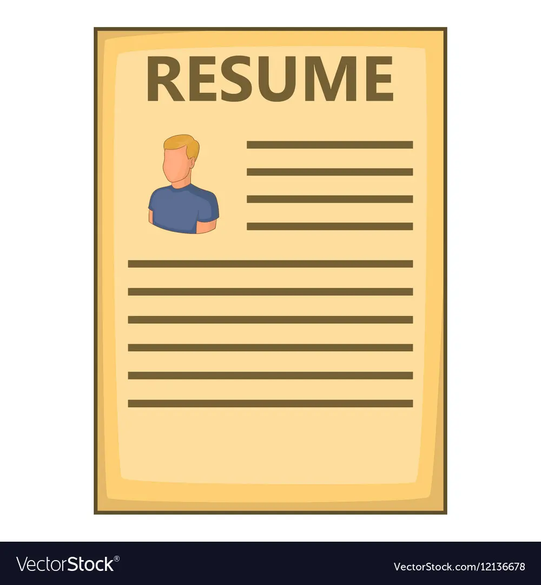

1. Add Contact Information
The first part of your resume should
always include your contact information.
Make it easy for hiring managers to
contact you if needed.

2. Add Resume Introduction
Include things about yourself or your
experience that will really set you apart
from the rest of the applicants.
3. Add Education
List your most recent degree first,
followed by other education and training
you have received.
4. Add Job Experience
Start with your most recent job and work
backward. Most experts recommended that
you should only include jobs from the
past 10 to 15 years.
5. Add Relevant skills
Highlight hard and soft skills that
are relevant to the position you're
applying for.
6. Add References
Include a section for references towards
the end. Employers will require at least
two references before making any offer.